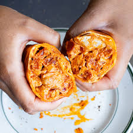

Paprika Chicken & Chorizo Toasted Wrap

Description
Get ready for a flavor explosion with this wrap! Juicy, paprika-seasoned chicken teams up with spicy chorizo for a combo that's totally irresistible. And here's the game-changer: toasting the wrap! It makes everything melt together in the most delicious way. This is your go-to for a protein-packed lunch that the whole family will love!
Ingredients
Serves 1
- Chicken Breasts - 120g
- Red Onion - 1/2
- Chorizo - 25g
- Paprika - 1/2 tbsp
- Tomatoe Puree - 1 tbsp
- Light Soft Cheese - 30g
- Grated Mozzarella - 25g
- Tortilla Wrap - 1
Steps
- Dice the chicken into small chunks, approximately 1-2cm wide. Finely dice the onion and finally slice the chorizo into discs, then chop each disc into quarters.
- Put the onion, chorizo and chicken into a non-stick frying pan set over a medium heat. Sprinkle the paprika over the chicken and fry for around 10 mins until the onion has softened and the chicken is cooked through.
- Stir in the tomato purée, then remove from the heat. Tip the mixture into a bowl with the soft cheese and mozzarella, then mix well.
- Heat the wrap in a microwave, then scoop the mixture into the centre of the wrap. Fold either side in and then roll it up, tucking it under as you go so it holds together nicely.
- Reheat the pan that you just used, then pop the wrap in, spreading the remaining bits of the mixture on top for extra crispiness! Cook for a few minutes each side over a medium heat until golden and crispy.
- Leave to cool for 5 mins, then cut in half and enjoy.